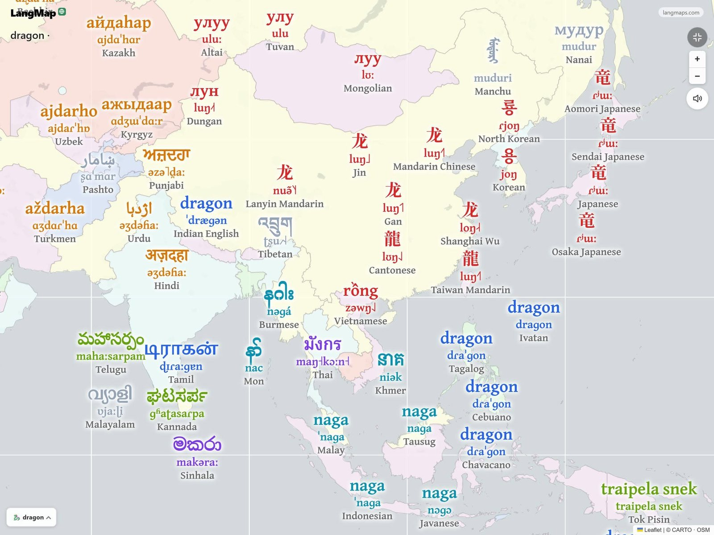

Dragon Mountain: 龍山 Across East Asia
- Seoul has a place called 龍山, the Dragon Mountain.
- China has another 龍山, a name that became famous in archaeology.
- Japan has one too. But its dragon has a rather unexpected origin.

Contents
A dragon hidden in a place name
Across East Asia, dragons are symbols of power, water, and good fortune.
So it is not surprising to find places named:
龍山
Literally, "Dragon Mountain."
But the stories behind these two characters are not always what they seem.
Korea: A mountain shaped like a dragon
In Seoul, there is a district called:
龍山 / 용산
Yongsan
According to a traditional explanation, the surrounding hills resembled a dragon winding its way through the landscape.
The name appears in historical Korean records, long before modern Seoul took shape.
Today, Yongsan is a busy urban district.
But its name preserves an older way of seeing the land.
A dragon in the hills.
China: A dragon that named a civilization
In Shandong, China, there is:
龍山 / 龙山
Lóngshān
The name became famous for a very different reason.
In 1928, archaeologists discovered ancient remains at Chengziya (城子崖), near Longshan.
Excavations revealed remarkable black pottery and evidence of a sophisticated Neolithic society.
The discoveries became associated with:
龍山文化 / 龙山文化
Lóngshān Culture
An archaeological tradition dating back roughly 4,000 to 5,000 years.
A local place name had become the name of an entire prehistoric culture.
But now travel to Japan.
Surely, another Dragon Mountain must have a legend involving a dragon.
Right?
Japan: The dragon that came from paperwork
In Shizuoka Prefecture, Japan, there is:
龍山
Tatsuyama
A mountainous area along the Tenryū River (天竜川).
With a name like Dragon Mountain, you might imagine an ancient legend about a dragon rising from the river.
But the real origin is much simpler.
In 1901, parts of two villages were merged.
Their names were:
龍川村 (Tatsukawa-mura)
and
山香村 (Yamaka-mura).
The new village took one character from each.
龍川 + 山香
= 龍山
No dragon-shaped mountain was needed.
No ancient prophecy.
Just two village names and an administrative merger.
And that is how Japan got another Dragon Mountain.
Same characters, different histories
Korea's 龍山 recalls a dragon-shaped landscape.
China's 龍山 gave its name to a prehistoric archaeological culture.
Japan's 龍山 was created by combining characters from two older village names.
The same two characters can preserve very different stories.
Sometimes a place name remembers a legend.
Sometimes it becomes part of world history.
And sometimes...
The dragon was born in a village office.
What other magnificent place names might have surprisingly ordinary origins?